1.选择优质的VPS
简单介绍：Vultr作为全球最大的游戏主机提供商背景之一，上线之后以高质的性价比、遍布全球16个数据中心，以及新注册用户不定期有美金赠送，吸引广大的用户。
而且操作简单方便，一键部署，性能目前测试非常不错。支付是采用充值的方式，支持国内 支付宝 支付，微信扫码 支付。按照VPS开通使用情况每小时扣款，不象很多其他VPS要求一次买2年或者1年的，非常人性化。
手把手教你vps搭建属于自己的ss教程，开始科学上网吧（利用vultr，Google, 看youtube1080p无压力）
简单介绍：Vultr作为全球最大的游戏主机提供商背景之一，上线之后以高质的性价比、遍布全球16个数据中心，以及新注册用户不定期有美金赠送，吸引广大的用户。
而且操作简单方便，一键部署，性能目前测试非常不错。支付是采用充值的方式，支持国内 支付宝 支付，微信扫码 支付。按照VPS开通使用情况每小时扣款，不象很多其他VPS要求一次买2年或者1年的，非常人性化。
或者打开我的推荐-优惠注册地址（注册会获得50美金账户余额-官方最新活动-进行中）
Get started in the Vultr SSD Cloud!进入网站之后填写注册邮箱、密码 （最少10位，要同时有数字和大小写字母） ，点击create account。
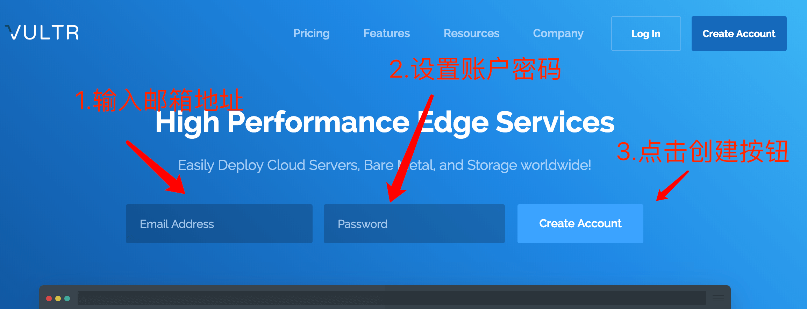然后点击左边栏Billing跳转到充值页面=>
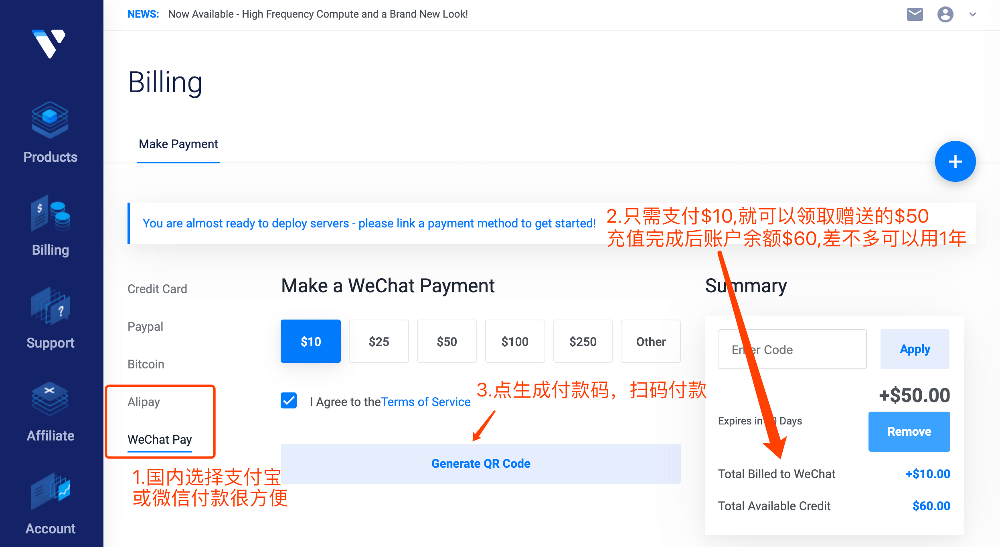这时就可以用alipay（支付宝）或者微信扫码付款充值，相信大家轻松搞定。
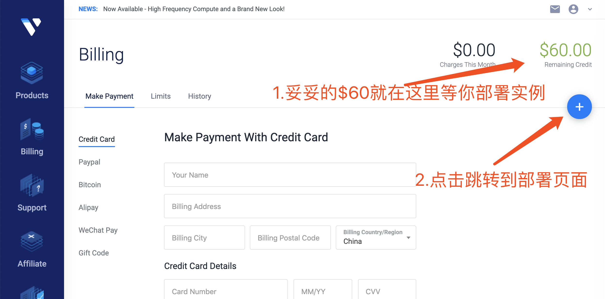然后选择服务器节点位置以及相关配置，按下图依次选择配置：
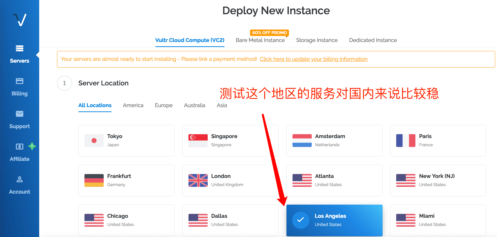然后选择操作系统、以及收费级别=>
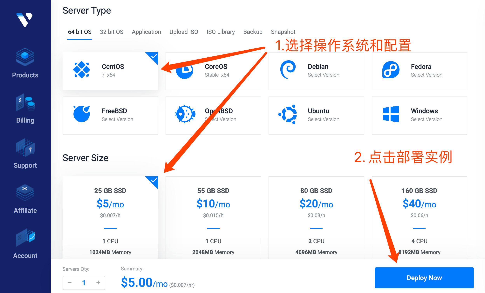然后会自动跳转到Products界面=>
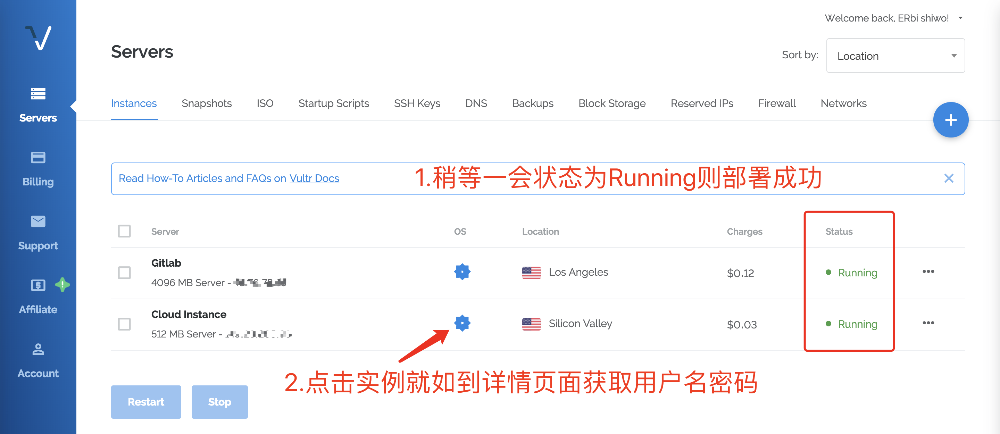记录服务器相关信息=>
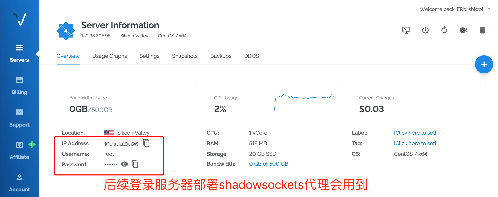4.1. 下载putty：http://pan.baidu.com/s/1jI0T5Fw 解压运行putty.exe，
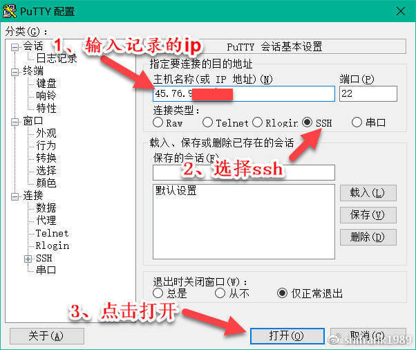填入刚建好的实例信息=>
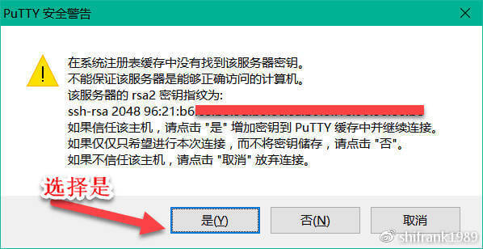如果这里有对话框弹出，选择是，然后在全黑的屏幕上输入 root ，回车。等五秒，按提示输入vps的密码，(注意：这里强烈建议你直接复制粘贴密码, 不建议手动输入密码,容易出错：
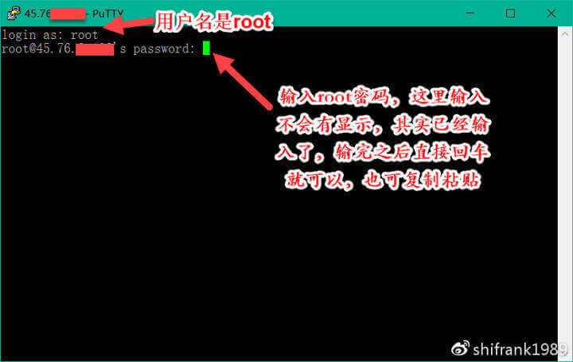4.2 安装shadowsocks

wget --no-check-certificate https://raw.githubusercontent.com/teddysun/shadowsocks_install/master/shadowsocks.sh等待下载完成
chmod +x shadowsocks.sh
./shadowsocks.sh 2>&1 | tee shadowsocks.log
中间会提示你输入你的SS SERVER的账号，和端口。不输入就是默认。跑完命令后会出来你的SS客户端的信息。特别注意，由于iphone端的目前只支持到cfb，所以我们选择aes-256-cfb，即7，这一步按回车继续然后需要几分钟的安装过程，请耐心等待出现下面的画面！
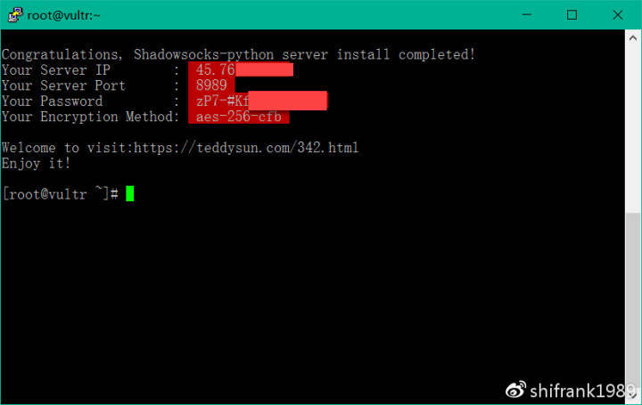请立即copy下来加以保存。记录保存好你的上述信息：Server IP、Server Port、Password、Encryption Method。这时你的专属ss已经搭好了，开始使用吧。
提供一个集成了以上客户端的下载地址
Shadowsockets client点击左边的server选项，点击加好按钮选择服务器节点位置以及相关配置，按下图依次选择配置：
考虑到这个网站需要翻墙才能访问，提供几个百度云备用下载地址如下：
Mac哟哟哟，可以Google和YouTube啦,这世界就在你眼前!
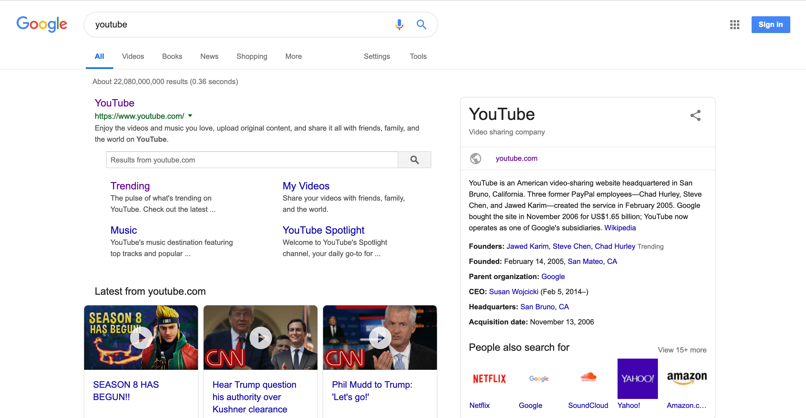如果这篇文章帮到了你，那就请为我点个赞吧(∩_∩)，或者也可以打赏给我！